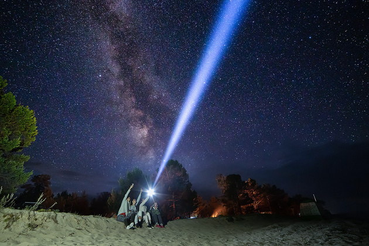
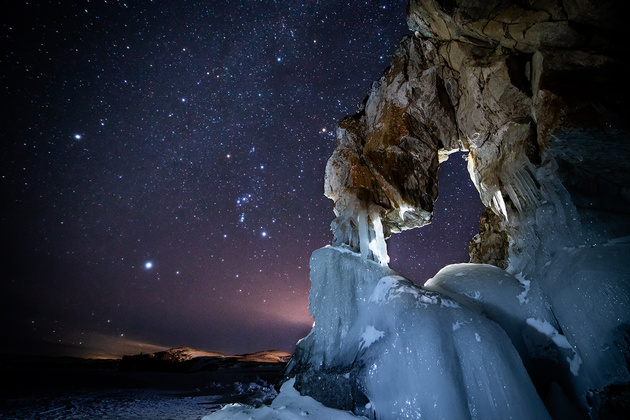

Пейзажная астрофотография без шумов
Пейзажная астрофотография, на мой взгляд, один из самых увлекательных и в то же время сложных жанров в фотографии. А сложностей здесь несколько. Во-первых, нужно куда-то выехать ночью, желательно подальше от города, чтобы минимизировать световое загрязнение. Это тот столб света, который город, а точнее его освещение, отправляет в небо. И этот столб засвечивает небо до такой степени, что звезды видны очень плохо, а про млечный путь вообще можно забыть. Также должно повезти с погодой. Ночь должна быть безоблачная и безлунная, луна тоже делает неплохую засветку. Опять же, время года влияет на то, как будет виден млечный путь и будет ли виден вообще. Кстати, выезжать нужно не ночью, а сильно заранее, чтобы еще при дневном свете можно было подобрать хорошую сцену для съемки.
В случае со звездами, которые расплылись в треки, нам нужно ставить выдержку длинною в десятки минут или даже несколько часов, в зависимости от того, какой длины трек нужно получить.

Во втором случае нужно рассчитать верную выдержку, чтобы звезды остались точками. А выдержка эта будет зависеть от фокусного расстояния, которое вы собираетесь использовать. Рассчитывается она по так называемому правилу шестисот. Нам нужно разделить 600 на фокусное расстояние и получить максимальную выдержку, с которой нужно снимать, чтобы звезды остались точками. Например, при съемке с фокусным расстоянием в 24 мм мы должны произвести следующие расчеты 600/24=25 с. Если ваша камера имеет матрицу с кроп-фактром, не забудьте сделать поправку, умножив фокусное расстояние на кропфактор. 25 секунд — это максимальная выдержка, с которой можно снимать. Длиннее выдержку ставить нельзя. И, чтобы при такой выдержке звезды нормально проэкспонировались, нам нужно открыть диафрагму пошире и установить высокое значение ISO. Идеальным это значение будет в диапазоне 2000-6000 единиц. Но при таком значении ISO мы получим много шумов. Да, современные камеры способны снимать с высокими значениями ISO с некритичным уровнем шумов, но при такой выдержке шумы все же будут.
Конечно, их можно будет в какой-то степени подавить при помощи графических редакторов, но я считаю, это не панацея. А у недорогих камер с несветосильной оптикой это может стать очень большой проблемой. Но выход есть!
Можно использовать метод съемки со стекингом и медианное сложения шумов для их максимального подавления. Нам нужно снять серию кадров с одними и теми же настройками, после чего алгоритм соответствующей программы обработки очень существенно уменьшит шумы.

Статьи
- Как пользоваться фотоаппаратом?
- Что такое макро? Особенности и приёмы съёмки мелких предметов
- Пейзажная астрофотография
- Обзор Sony A7 IVх
- Тест